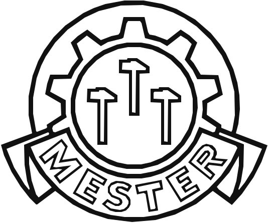

Planlegger du å bygge om?
Nybygg, tilbygg, rehabilitering, takarbeid og innvendige oppgraderinger.
Se byggetjenesteneFra første idé til ferdig prosjekt. Vi utfører nybygg, tilbygg, rehabilitering, takarbeid og tømreroppdrag – med fokus på kvalitet, god kommunikasjon og ryddig gjennomføring.


Enten du skal oppgradere boligen, trenger en tømrerpartner eller forvalter eiendom – vi tar gjerne en første prat om behovet.
Nybygg, tilbygg, rehabilitering, takarbeid og innvendige oppgraderinger.
Se byggetjenesteneTømrerarbeid som underentreprenør, ekstra kapasitet og avtalte leveranser.
Les om samarbeidRehabilitering, utskifting av bygningsdeler og stillasløsninger etter avtale.
Se løsninger for bedrifterVi utfører tømrerarbeid for privatkunder, entreprenører og eiendomsaktører. Fra konkrete enkeltoppgaver til større byggeprosjekter – med tydelige avklaringer om omfang og fremdrift.
Tømrerarbeid ved oppføring av eneboliger og nye bygg. Vi utfører avtalte deler fra reisverk og takkonstruksjon til kledning og innvendige arbeider.
Les mer om nybygg →Utvid boligen med nye rom eller en ny etasje. Vi utfører tømrerarbeid og tilpasninger mellom eksisterende og ny konstruksjon.
Les mer om tilbygg og påbygg →Oppgradering fra enkeltrom til større renovering. Riving, gjenoppbygging, gulv og overflater etter avtalt omfang.
Les mer om rehabilitering →Takomlegging, undertak, lekter, takstein, beslag, vindskier og tilhørende fasadearbeider.
Les mer om takarbeid →Klargjøring av underlag, legging av parkett og gulv, lister og tilpasninger – alene eller som del av en rehabilitering.
Se rehabilitering →Demontering, montering, isolering, tetting, foringer og listverk ved utskifting eller ny montering.
Se rehabilitering →Trekonstruksjoner, vegger, tak og kledning ved vinterhager og mindre utvidelser mot eksisterende bolig.
Se tilbygg og påbygg →Montering og utskifting av renner, nedløpsrør, rennekroker og tilhørende beslag.
Se takarbeid →Tildekking, klargjøring, sparkling, sliping, grunning og maling av vegger og tak – som del av oppussing eller rehabilitering.
Se rehabilitering →Planlegging og koordinering av avtalte tømrerarbeider og leveranser, med tydelig omfang, ansvarsfordeling og fremdrift.
Les om samarbeid →Montering og tilpasning av skap, fronter, dekksider, foringer og listverk, med avklaringer mot rørlegger og elektriker der det trengs.
Se innvendig arbeid →Vi vurderer prosjektet og kan koordinere avtalte fag og leveranser. Ansvar, omfang og hva som inngår beskrives før oppstart.
Les om samarbeid →Tømrerarbeid som underentreprenør og ekstra kapasitet i nybygg og rehabilitering, med tydelige grensesnitt og avtalt fremdrift.
Les om samarbeid →Fasadestillas, HAKI aluminium, lettstillas og trappetårn. Stillasutleie og montering etter avtale.
Les mer om BK Stillas →Vi tar på oss både mindre tømreroppgaver og større oppgraderinger. Ta kontakt for en prat om hva du ønsker å få gjort – så ser vi på mulighetene sammen.

Illustrasjonsfoto · Olek Buzunov / Unsplash
Har du et prosjekt som ikke står på listen? Vi vurderer gjerne oppdraget sammen med deg og finner ut hvilke løsninger som kan passe.
Beskriv prosjektet dittByggmester Kåsa AS bygger på en håndverksvirksomhet med historie tilbake til 2010. Det som startet som et enkeltpersonforetak, ble videreført som aksjeselskap i januar 2025. Overgangen til AS markerte et nytt kapittel for virksomheten, samtidig som erfaringen, håndverkskunnskapen og ambisjonen om å levere godt arbeid ble tatt med videre.
Gjennom årene har vi opparbeidet erfaring fra et bredt spekter av byggeoppdrag. Vi leverer tjenester innen nybygg, tilbygg og påbygg, rehabilitering, totalrenovering, takarbeid og tradisjonelt tømrerarbeid. Oppdragene varierer fra mindre arbeider og tilpasninger i eksisterende boliger til større og mer sammensatte byggeprosjekter.
Vi har erfaring fra arbeid på både boliger og næringsbygg, og har også vært involvert i TV-produksjonen Farmen på TV 2, på gården i Ørje. Slike oppdrag har gitt verdifull erfaring med ulike rammer, praktiske utfordringer og behovet for å finne gode løsninger når arbeidet skal planlegges og gjennomføres.
Byggmester Kåsa AS tar oppdrag på hele Østlandet. Vi ønsker å være en samarbeidspartner som er tilgjengelig, løsningsorientert og tydelig gjennom hele prosessen. God planlegging, ryddig kommunikasjon og respekt for kundens eiendom og tid er viktige deler av måten vi jobber på.
For oss handler godt håndverk om mer enn selve utførelsen. Det handler også om å forstå behovet, gjøre gode vurderinger underveis og levere et resultat kunden kan være trygg på. Enten oppdraget gjelder nybygg, en utvidelse av boligen, rehabilitering, takarbeid eller tømrerarbeid som underentreprenør, møter vi arbeidet med samme mål: solide løsninger som varer.
Har du et byggeprosjekt på gang? Ta gjerne kontakt for en hyggelig prat og et uforpliktende tilbud. Vi ser frem til å høre om planene dine og finne ut hvordan vi kan bidra.
Ta kontakt med ossVi utfører tømrerarbeid, rehabilitering, takarbeid og stillasoppdrag for privatkunder og profesjonelle oppdragsgivere på hele Østlandet.
Bildene er illustrasjonsfoto fra Unsplash. De viser ulike typer arbeid og er ikke dokumentasjon fra konkrete kundeoppdrag.

Tømrerarbeid ved oppføring av nye boliger – fra reisverk og takkonstruksjon til kledning og innvendige arbeider.
Les mer om nybygg →
Nye rom, større boligareal og tilpasninger mellom eksisterende og ny konstruksjon.
Les mer om tilbygg og påbygg →
Riving, nye vegger, gulv, vinduer og overflater – tilpasset byggets tilstand og avtalt arbeidsomfang.
Les mer om rehabilitering →
Arbeid med undertak, sløyfer, lekter, takstein og tilhørende detaljer etter prosjektets behov.
Les mer om takarbeid →
Stillasutleie og montering til takarbeid, vindusutskifting, maling og rehabilitering på hele Østlandet.
Les mer om BK Stillas →Har du et konkret prosjekt? Ta kontakt, så går vi gjennom arbeidsomfang, fremdrift og mulige løsninger.
Beskriv prosjektet dittHMS · Presisjon · Trygghet
Vi bygger grunnlaget for seriøse prosjekter. BK Stillas leverer stillasutleie og montering for håndverkere, entreprenører, bedrifter og private kunder. Vi hjelper deg med å finne en praktisk og trygg stillasløsning tilpasset bygget, arbeidsoppgaven og prosjektets fremdrift.
Vi leverer på hele Østlandet og bistår ved både små og større oppdrag – fra stillas til vindusutskifting og maling, til større fasade- og takarbeider. Vi har HAKI aluminiumsstillas og lettstillas, og vurderer løsningen ut fra høyde, lengde, adkomst og hva som skal utføres.

Vi leverer fasadestillas til maling, vedlikehold, rehabilitering, etterisolering og utskifting av kledning eller vinduer. Omfang og oppbygging tilpasses byggets høyde, lengde, terreng og adkomst. Vi kan vurdere stillas på én vegg, flere fasader eller rundt større deler av bygget. Arbeidsoppgaven og forholdene på tomten avklares på forhånd, slik at løsningen passer byggeplassen.
Vi har HAKI aluminiumsstillas og lettstillas som gir fleksible muligheter for ulike bygge- og vedlikeholdsoppdrag. Lette komponenter kan være praktiske ved transport, håndtering og tilpasning på byggeplassen. Valg av løsning vurderes ut fra høyde, belastning, underlag, adkomst og bruken av stillaset. Vi går gjennom hva som skal utføres før vi avklarer hvilket materiell som er aktuelt.
Trappetårn kan gi en praktisk adkomst mellom bakkenivå og stillasets arbeidsplan, særlig på større fasader og prosjekter med mye ferdsel. Vi vurderer plassering, tilkomst og forbindelsen til arbeidsnivåene ut fra tomt, byggets utforming og hvordan arbeidsplassen skal brukes. En planlagt adkomst kan gjøre ferdselen enklere for dem som arbeider på stillaset.
Ved takomlegging, reparasjoner, beslagarbeid og vedlikehold kan stillas gi bedre tilkomst langs bygget. Vi vurderer løsningen ut fra takhøyde, takform, terreng og hvilke arbeidsområder håndverkerne trenger tilgang til. Arbeidsoppgaven avklares på forhånd, slik at plassering, adkomst og nødvendig omfang kan vurderes før montering.
Rehabiliteringsoppdrag kan kreve stillas på én fasade, flere sider eller rundt større deler av bygget. Behovet kan variere ved maling, kledningsbytte, etterisolering og vindusutskifting. Vi hjelper med å vurdere omfang, adkomst og leieperiode ut fra arbeidsoperasjonene og ønsket fremdrift, slik at stillasbehovet blir avklart før oppstart.
BK Stillas tilbyr stillasutleie og montering etter avtale. Vi avklarer prosjektsted, arbeidsoppgave, byggets mål, adkomst, nødvendig mengde materiell og ønsket leieperiode. Levering, montering og tidspunkt for demontering planlegges i dialog med kunden. Slik får du bedre oversikt over hva som inngår i leveransen og hvor lenge stillaset skal stå.
Stillas er en viktig del av en effektiv og sikker byggeplass. BK Stillas bistår blant annet med løsninger til:
God stillasplanlegging starter med å forstå jobben som skal gjøres. Vi legger vekt på riktig løsning, ryddig montering og at adkomst og sikring er tilpasset arbeidets art. Før tilbudet utarbeides, går vi gjennom byggets mål, plassering, adkomst og de arbeidsoperasjonene stillaset skal brukes til.
HMS, presisjon og trygghet skal være en naturlig del av leveransen. Vi avklarer blant annet byggets mål og høyde, hvor stillaset skal stå, adkomstforhold, ønsket leieperiode og hvilke arbeidsoppgaver stillaset skal brukes til.
Vårt mål er å gjøre det enklere for kunden å komme i gang med arbeidet – med en stillasløsning som er praktisk, oversiktlig og tilpasset prosjektet. Vi avklarer også forventet leieperiode, levering og tidspunkt for demontering, slik at kunden får en tydelig avtale om gjennomføringen.
Et stillas består av flere deler som sammen gir en stabil arbeidsplattform og trygg adkomst. Avhengig av oppdraget kan løsningen blant annet bygges opp med:
Behovet er forskjellig fra prosjekt til prosjekt. Ved vindusutskifting er god tilgang langs fasaden viktig. Ved maling og fasadearbeid må arbeidsnivåene passe til høyden og lengden på veggen. Ved takarbeid må adkomst og plassering vurderes ut fra byggets utforming og arbeidet som skal utføres.
Vi vurderer også grunnforhold, plass til stillasmateriell og mulige hindringer som inngangspartier, terrasser, trapper og skrånende terreng. Dette gir et bedre grunnlag for å planlegge en løsning som passer byggeplassen.
Vi tar en gjennomgang av oppdraget før vi anbefaler en løsning. Målet er at stillaset skal fungere godt for dem som faktisk skal bruke det.
Vi tar oppdrag på hele Østlandet. Vi vurderer hvert prosjekt ut fra adresse, byggets høyde og lengde, type arbeid, adkomst og ønsket fremdrift. Send oss gjerne prosjektsted og bilder, så avklarer vi omfang og mulig gjennomføring.
Ja, vi vurderer både mindre oppdrag som vindusutskifting, maling og lokale reparasjoner, og større stillasbehov ved rehabilitering, takarbeid og byggeprosjekter. Noen oppdrag trenger stillas langs én fasade, mens andre krever løsninger på flere sider av bygget.
Send prosjektadresse, bilder av de aktuelle fasadene, omtrentlige mål og høyde, type arbeid, ønsket oppstart og leieperiode. Opplys gjerne også om adkomst, terreng og eventuelle hindringer rundt bygget. Dette gir oss et bedre grunnlag for å vurdere materiell, montering og omfang.
Ja, vi tilbyr både stillasutleie og montering etter avtale. Vi avklarer først arbeidsoppgave, mål, adkomst og hvor lenge stillaset skal brukes. Levering, montering, leieperiode og demontering avtales tydelig før gjennomføring.
For at vi skal kunne vurdere behovet og gi et relevant tilbud, er det fint om du sender oss:
Vi går gjennom informasjonen sammen med deg og avklarer om det er behov for befaring eller flere opplysninger før tilbudet ferdigstilles.
Send oss gjerne adresse, noen bilder av bygget, hva slags arbeid som skal utføres og når du trenger stillaset. Da får vi et godt utgangspunkt for å vurdere oppdraget og gi deg en tilbakemelding.
Her er svar på noen av spørsmålene vi ofte får fra kunder og samarbeidspartnere.
Vi utfører blant annet nybygg, tilbygg og påbygg, rehabilitering, tak og fasade, vindusutskifting, parkett og gulv, vinterhager, takrenner og nedløp, sparkling og maling. Vi vurderer både mindre oppdrag og større prosjekter.
Byggmester Kåsa AS og BK Stillas tar oppdrag på hele Østlandet. Oppdrag og kapasitet vurderes ut fra sted, omfang og ønsket fremdrift.
Ja. Vi tar tømreroppdrag som underentreprenør og kan bidra med ekstra kapasitet og praktisk gjennomføring etter nærmere avtale.
Send gjerne prosjektadresse, noen bilder, en kort beskrivelse av arbeidet, omtrentlige mål og ønsket tidspunkt. Tegninger eller annen prosjektinformasjon er også nyttig der det finnes.
Usikker på hva du trenger? Beskriv situasjonen, så tar vi en uforpliktende prat om mulige løsninger og neste steg.
Ta kontaktFortell oss kort hva du trenger hjelp med. Legg gjerne ved bilder eller tegninger når du sender e-post, så får vi et godt utgangspunkt for å vurdere oppdraget.
Byggmester Kåsa AS
Nybygg · Tilbygg · Rehabilitering · Takarbeid · Tømrerarbeid
BK Stillas
Stillasutleie · Fasadestillas · HAKI aluminium · Montering
Vi tar oppdrag på hele Østlandet.
Fyll ut feltene, så klargjør vi en e-post med opplysningene dine. Du kontrollerer og sender den fra ditt eget e-postprogram.